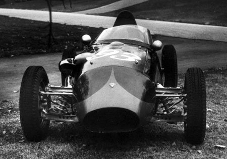

This page will show you all the cars used in the season 1958.

Stanguellini - Fiat
dit is een hele mooie stanguelinni - Fiat
Specifications
| engine | Fiat |
| size | 1100cc |
| horsepower | 133bhp |

Taraschi- Fiat
dit is een hele mooie Taraschi - FiatSpecifications
| engine | Fiat |
| size | 1100cc |
| horsepower | 100bhp |

Volpini - Fiat
dit is een hele mooie Volpini - Fiat
Specifications
| engine | Fiat |
| size | 1100cc |
| horsepower | 133bhp |